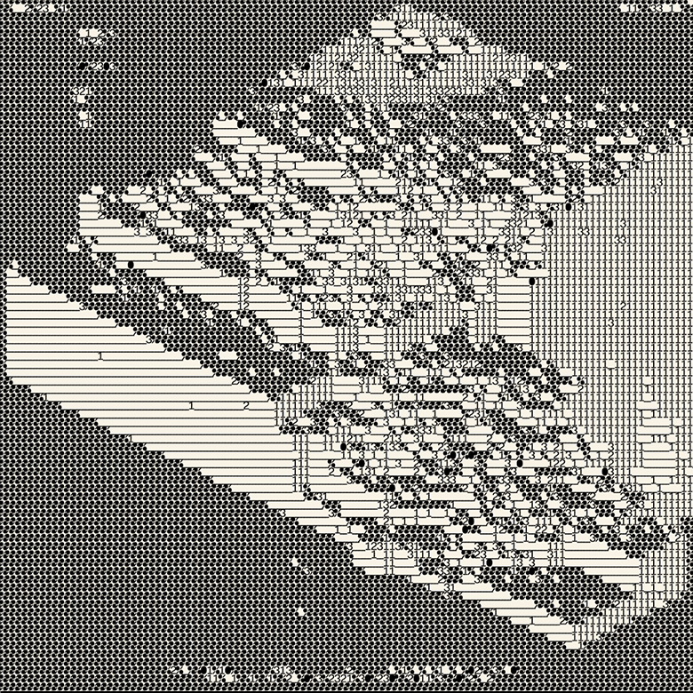

CONCEPT DRIFT
-
Earthworming: Responsible AI
Ursula Franklin's 1989 Massey Lecture "The Real World of Technology" offers a sharp framework for thinking critically about "artificial intelligence" today. Delivered at the dawn of the internet and personal computing, the technocratic conditions she described have only intensified. Her analysis of how prescriptive technologies erode human agency and restructure social relations around compliance has anticipated algorithmic surveillance, predictive policing, and mechanized warfare. Today, with Big Tech's rapid deployment of LLMs and agentic AI, her thought proves only more prescient. […] ▷
-
Disconnecting Big Tech
In January 2026, I made the resolution to ditch Big Tech as much as possible. We are living through a time of accelerating geopolitical tension and the consolidation of digital infrastructure into a small number of empire-scale corporations who have captured the internet. They surveil and manipulate our online behaviour, extract our content, and sell it back to us like bottled water — or, should I say, slop. […] ▷
-
About
I'm a Software Developer with over a decade experience in mobile and enterprise systems, from early discovery through production. I approach engineering as a craft, valuing human authorship, collaboration and responsible AI-assisted workflows over black-box automation and proprietary lock-in. Open source, inclusive design, data privacy, digital sovereignty, and sustainable architecture are the principles that guide that practice. […] ▷